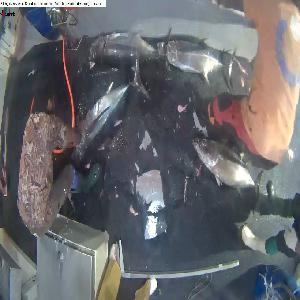
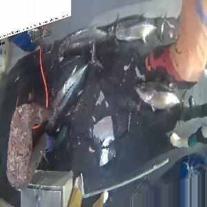

Partage de connaissance
Compétition kaggle 🐟
Cristian, Mikael
2017-05-23
1. The competition and the data
Starting point
In the Western and Central Pacific, 60% of the world’s tuna is caught illegally, a threat to marine ecosystem.
Goal of the competition
Automate fish detection on pictures from fishing boats. (with machine learning)
Images classes

Data
| Name | Number of photos |
|---|---|
| Train | 3777 |
| Test stage 1 | 1000 |
| Test stage 2 | 12000 |
Class distribution

Image sizes

Preliminary observations
- Pictures from video sequences
- Limited number of boats in training set
- Day/night pictures
- Multiple fishes per picture
- Train set labelling errors
Important dates
| Stage | Date |
|---|---|
| Competition start | 14 Nov 2016 |
| We start 🉠| 13 Jan 2017 |
| End stage 1 | 6 April 2017 |
| End stage 2 | 13 April 2017 |
2. Computer vision based approach
Extract features
Combine features and train a model

Analyze the results

Remove background information
Scoring
3. A methodological break
Cookiecutter
├── LICENSE
├── Makefile <- Makefile with commands like 'make data' or 'make train'
├── README.md <- The top-level README for developers using this project.
├── data
│ ├── external <- Data from third party sources.
│ ├── interim <- Intermediate data that has been transformed.
│ ├── processed <- The final, canonical data sets for modeling.
│ └── raw <- The original, immutable data dump.
│
├── docs <- A default Sphinx project; see sphinx-doc.org for details
│
├── models <- Trained and serialized models, model predictions, or model summaries
│
├── notebooks <- Jupyter notebooks. Naming convention is a number (for ordering),
│ the creator s initials, and a short '-' delimited description, e.g.
│ '1.0-jqp-initial-data-exploration'.
│
├── references <- Data dictionaries, manuals, and all other explanatory materials.
│
├── reports <- Generated analysis as HTML, PDF, LaTeX, etc.
│ └── figures <- Generated graphics and figures to be used in reporting
│
├── requirements.txt <- The requirements file for reproducing the analysis environment, e.g.
│ generated with 'pip freeze > requirements.txt'
│
├── src <- Source code for use in this project.
│ ├── __init__.py <- Makes src a Python module
│ │
│ ├── data <- Scripts to download or generate data
│ │ └── make_dataset.py
│ │
│ ├── features <- Scripts to turn raw data into features for modeling
│ │ └── build_features.py
│ │
│ ├── models <- Scripts to train models and then use trained models to make
│ │ │ predictions
│ │ ├── predict_model.py
│ │ └── train_model.py
│ │
│ └── visualization <- Scripts to create exploratory and results oriented visualizations
│ └── visualize.py
│
└── tox.ini <- tox file with settings for running tox; see tox.testrun.org
Data abstraction layer
Every picture was
4. Deep learning approach
Bounding box regression
- Fishes Bounding box coordinates shared on kaggle forum.
- Done using Sloth.
- Coordinates of the bounding box referenced as (
x,y,widthandheight).
Multiple fish per picture
- Only one bounding box per picture,
- Data augmentation by selecting multiple fishes per pictures
- No Fish : empty coordinates.
Image preprocessing with keras
- Preprocessing with Keras (ImageDataGenerator)
- Rescale, rotation, shift, shear, flip, whitening, etc.
- Preprocessing generator
flow_from_directory:- Read images form a directory.
- Assign class for each subdirectory
- Generates batches of augmented/normalized data
- Yields batches indefinitely, in an infinite loop.
Training
- Keras also provides a method to train images by batches (
fit_generator)- reduce memory utilization.
- image preprocessing to be done in parallel of training process
- Requirement: bounding box coordinates and the Fish/NoFish label must be transformed as an iterator.
Train the model by batch
- The generator that feed the training fonction by batch contains:
- The image generator
- The bounding box coordinates generator
- The Fish/NoFish label
- itertools: cylce, izip
>>> itertools.cycle('ABCD')
A B C D A B C D ...`
>>> itertools.izip('ABCD', 'xy')
Ax By`Pretrained model
Pretrained network determine universal features (curves and edges in its early layers).
- Pretrained models
- Complex architecture with huge amount of parametres
- Trained on large datasets like the ImageNet, with 1.2M labelled images.
Fine tuning
- Replace last layer it with a new softmax layer with the number of class
Image augmentation
- Rescale
[0:255] -> [0.:1.]- InceptionV3 graph operates on floating point values
- shear
 
- rotation, shift, shear, flip, whitening, etc.
5. Elements of conclusion
- Image preprocessing can significantly increase the performance of a classification algorithm.
- A feature descriptor represents a simplified version of an image by extracting useful information and throwing away extraneous information.
- Using feature description increases training speed compared with raw images.